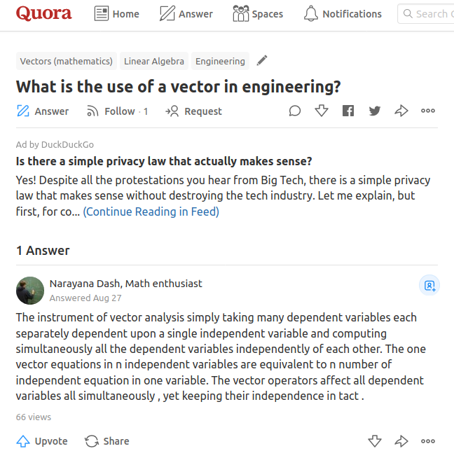
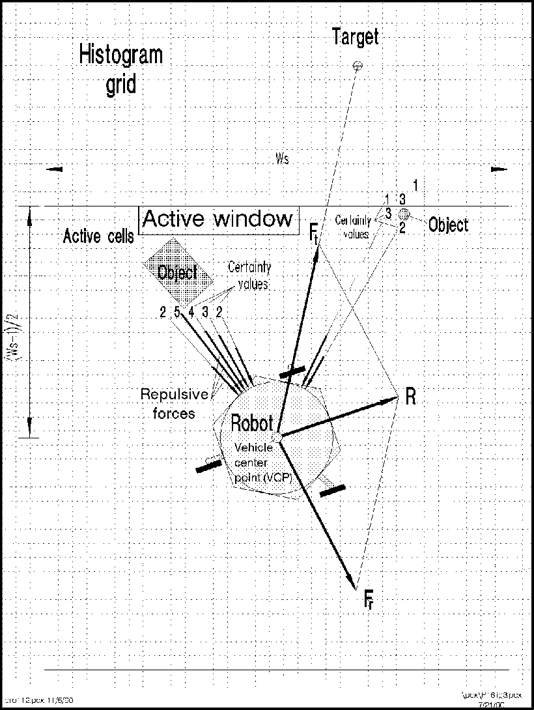
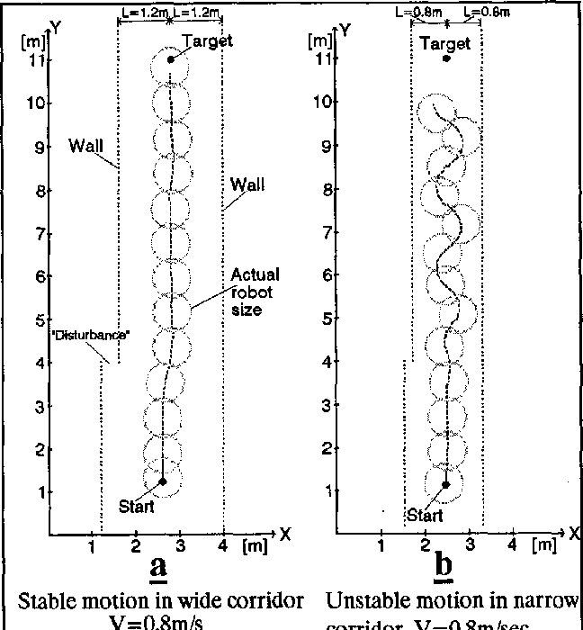
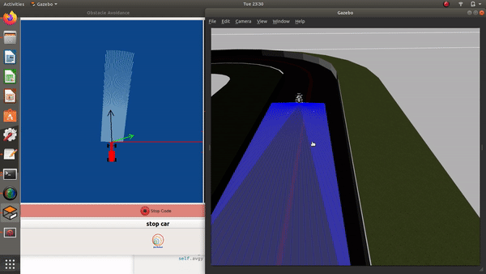

Local Navigation is an important subproblem in the field of Navigation in Robotics. It allows for the robot to break a global path into smaller parts which are effective to navigate through. This article discusses the implementation details of one such algorithm called the Virtual Force Field Algorithm. Self Driving Cars make use of this algorithm to avoid obstacles

Vectors are an important mathematical structure, which are the fundamental block of the Virtual Force Field Algorithm.
Virtual Force Field Algorithm
The task of Navigation in Robotics is to take a robot from a point A to a point B, without colliding with any obstacles on the path. The first task of Navigation involves working out an effective path (an optimal path, in terms of distance, time or any other parameter), which is called the Global Navigation. Once, a global path is decided, it is broken down into smaller sets of waypoints, which the robot may navigate through to reach its end goal. This navigation through waypoints is called the Local Navigation. VFF is an effective algorithm in order to carry out the task of Local Navigation.
A robot equipped with a LIDAR Sensor(or any similar Range Based Sensor) is capable of automatic navigation using the VFF Algorithm. The sensor provides the robot with an estimate of the surroundings in order to navigate freely in its enviorment, while avoiding the obstacles that may appear in its path.
The VFF Algorithm works as follows:
- Assign an attractive vector(going outwards from the robot) pointing from the robot towards the next waypoint
- Assign a repulsive vector(going inwards into the robot) pointing from the obstacle towards the robot
- Add the 2 vectors to obtain the required direction of motion.
- Follow the direction of motion

Virtual Force Field Algorithm
Drawback of the Algorithm
This is an extremely basic algorithm, easy in theory as well as in application. But, it suffers from some drawbacks, which are:
- The robot is not able to enter narrow corridors
- Even if it enters one, the robot experiences oscillations, which; if are unstable would cause collisions


Oscillation is one of the drawback
The second drawback is a little easier to deal with, if the robot has to travel through narrow passages only, which is discussed in this article.
Implementation
As said, the implementation is quite easy and can be dealt with, one step at a time. The following implementation is on the obstacle_avoidance exercise of JdeRobot Robotics Academy.
Target Vector
Obtain the target vector by subtracting the current location of the robot from the current location of the next waypoint.
#k_target is a proportionality constant
target_vector = [k_target * (self.targetx - self.posx), k_target * (self.targety - self.posy)]
Obstacle Vector
Obtain the obstacle vector by adding all the repulsive vectors that go from obstacle towards the robot.
In terms of implementation, we would add the inverse of 180 sensor readings. The inverse step implies; smaller the magnitude of reading, closer it is to the robot and hence, more magnitude required for the repulsion vector.
#k_obstacle is a propoortionality constant
for r in self.laser.getLaserData().values:
obstacle_vector[0] += k_obstacle * (1/r) * math.cos(math.radians(angle)) #Cosine of Angle to take direction along X axis
obstacle_vector[1] += k_obstacle * (1/r) * math.sin(math.radians(angle)) #Sine of Angle to take direction along Y axis
angle -= 1
Direction Vector
Obtain the direction vector by adding the obstacle vector and the target vector.
#k_car is a proportionality constant
car_vector[0] = k_car * (target_vector[0] + obstacle_vector[0])
car_vector[1] = k_car * (target_vector[1] + obstacle_vector[1])
Narrow Corridors
The implementation given above is based on a robot that has a lot of free space around itself. This implementation cannot be applied directly to the exercise. The exercise requires us to follow a narrow path, which causes unstability in the motion of the car. There is a little trick to remedy this. If we have a monodirectional robot, that is, a robot following a single direction, like the one in the exercise, we can omit the component of obstacle vector parallel to the direction in which our robot needs to head.

A resultant obstacle vector, even though, there is no obstacle in front of the robot
In other words, only the left and right directions are responsible for our obstacle avoidance mechanism. We can move the robot forward with a constant non zero(obviously) velocity and steer the robot left or right, by considering the obstacle_vector. Hence, the code becomes:
self.motors.sendV(3.5) #Send velocity to robot
#Add PID to angle actual - where it should be headed times a constant
k_angle = -0.3
self.motors.sendW(k_angle * (car_vector[0])) #Send rotation to the robot
One more modification we can make is to apply a non linear value to our obstacle vector, hence avoiding large unstable values.
if(abs(obstacle_vector[0]) > 12):
obstacle_vector[0] = 12 *(abs(obstacle_vector[0])/obstacle_vector[0])
An improvement
Another concrete solution to this problem of Narrow Corridors was solved by J. Borenstein and Y. Koren by developing the Virtual Force Histogram Algorithm. Although they were the ones who developed VFF as well. VFH uses a histogram, to store the sensor readings. The values are then smoothened by applying a threshold. Then, the direction corresponding to a valley in the histogram is taken to be followed. Hence, this method improves over the narrow corridor problem. Detailed description about the VFH algorithm can be the topic of discussion of some other blog post.